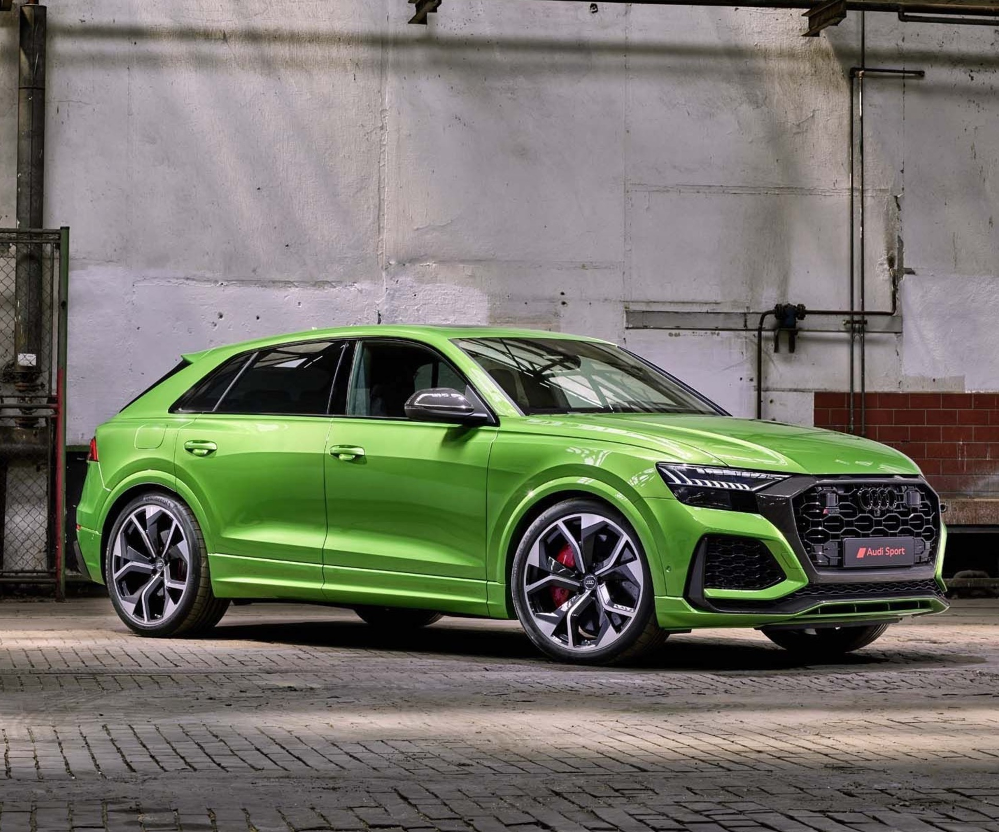
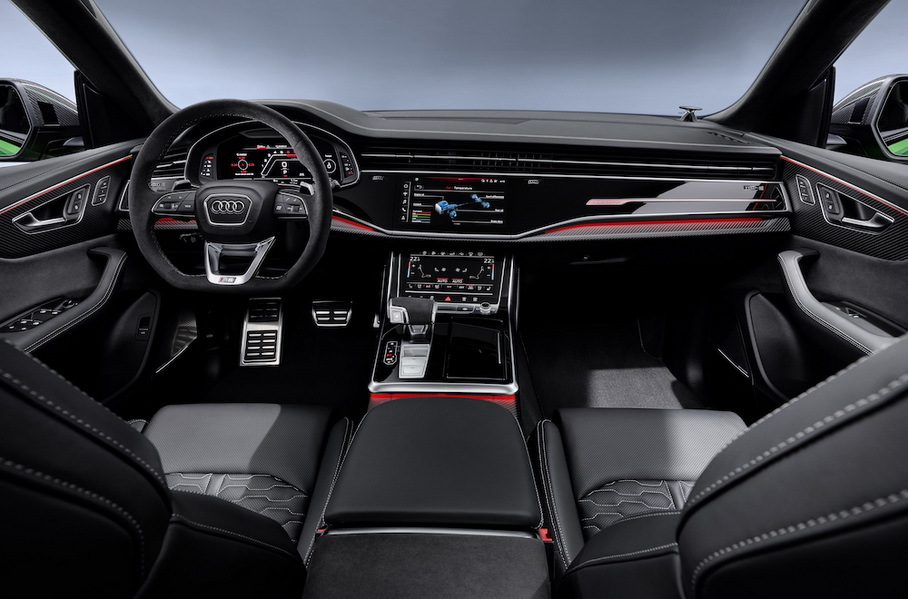
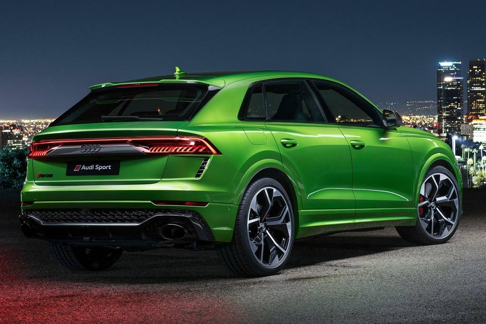
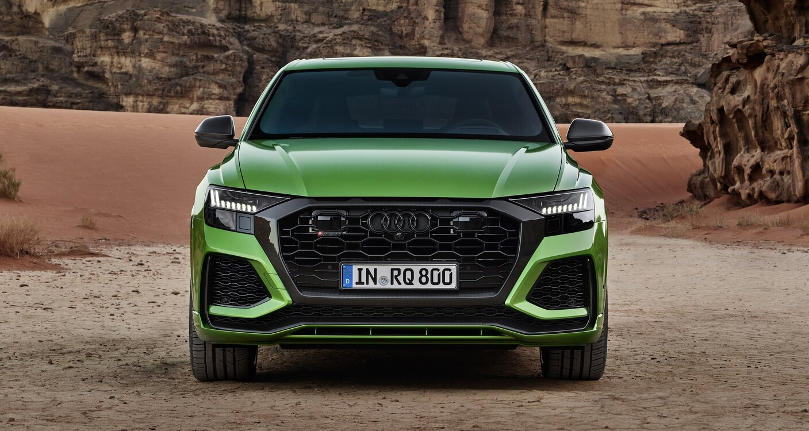
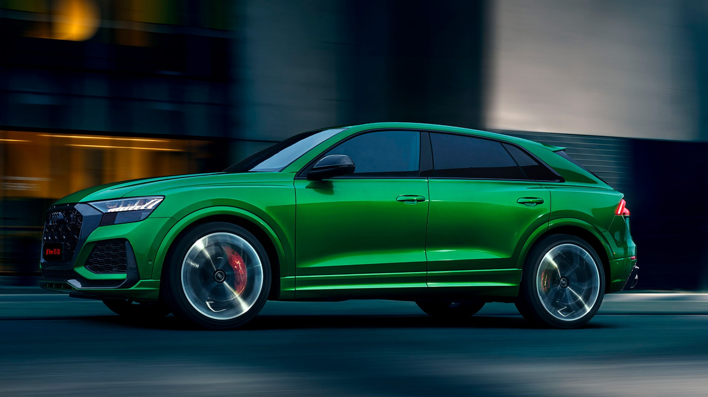

На автосалоне в Лос-Анджелесе две тысячи девятнадцатого компания Audi представила свой самый мощный серийный кроссовер — «заряженный» RS Q8. Снаружи новая модель получила максимально агрессивный дизайн экстерьера и обращает на себя внимание измененными бамперами, карбоновыми акцентами и задним диффузором с разведенными по бокам двустволками выпускной системы.
Уже в базе Audi RS Q8 2021 комплектуется полностью светодиодной оптикой, при этом за доплату машину можно заказать с затонированными матричными фарами. По умолчанию автомобилю положены 22-дюймовые диски, однако при желании его можно поставить и на 23-дюймовые колеса.
В салоне нового Ауди RS Q8 установлены спортивные кресла с комбинированной отделкой из кожи наппа и алькантары, в то время как передняя панель декорирована точечными вставками из карбона. А вот дисплеи достались заряженному кроссоверу от обычного Ауди Q8. Это значит, что для отображения драйверской информации здесь используется 12,3-дюймовая цифровая приборка с особым дизайном шкал, а под нужды мультимедийки отдан 10,1-дюймовый дисплей, под которым также расположен еще один монитор диагональю 8,6″.
В движение Audi RS Q8 2021 приводит 4,0-литровый двигатель V8 TFSI с двумя турбинами. Данный агрегат знаком по представленным ранее моделям RS6 Avant и RS7 Sportback, плюс им комплектуется соплатформенный вседорожник Ламборгигни Урус. На «заряженном» RS Q8 этот мотор выдает 600 л.с. и 800 Нм, работая в связке с восьмиступенчатым автоматом и фирменным полным приводом quattro, который по умолчанию распределяет тягу в пропорции 40:60 в пользу задней оси. За доплату предложен спортивный дифференциал, наличие которого, по словам разработчиков, позволяет слегка улучшить управляемость авто.
Сообщается, что с места до сотни Ауди РС Ку 8 ускоряется за 3,8 секунды, а планка в 200 км/ч покоряется ему спустя 13,7 сек. с момента старта. Разогнать машину можно вплоть до 250 км/ч, после чего сработает электронный ограничитель скорости. Опциональный Dynamic Package позволит увеличить максималку до 305 километров в час. По умолчанию кроссовер имеет адаптивную пневмоподвеску, позволяющую регулировать клиренс в диапазоне 90 мм, а также чугунные тормоза с 420- и 370-миллиметровыми дисками спереди и сзади соответственно. Впрочем, за доплату последние можно заменить на карбон-керамические с увеличенными до 440 миллиметров передними дисками.
Заметим, что Ауди RS Кью 8 представляет собой так называемый «мягкий гибрид». Кроссовер оснащен 48-вольтовой бортовой энергосистемой, от которой запитано немало различных устройств. Наряду с системой отключения части цилиндров при малых нагрузках и системой «старт-стоп» — она призвана сделать поездки на автомобиле более экономичными. Во время движения к услугам водителя предложено сразу восемь ездовых пресетов. Шесть из них предустановленные (Comfort, Auto, Dynamic, Efficiency, Allroad и Offroad), а два (RS1 и RS2) — индивидуальные, при этом их активация осуществляется со специальных кнопок на руле. В Европе продажи Audi RS Q8 стартовали в первом квартале двадцатого года по цене от 127 000 евро, то есть новинка оказалась почти в два раза дешевле Lamborghini Urus (от €209 000) — хорошее предложение. Стоимость модели в России стартует с отметки в 10 240 000 рублей, но это без учета многочисленных опций.
